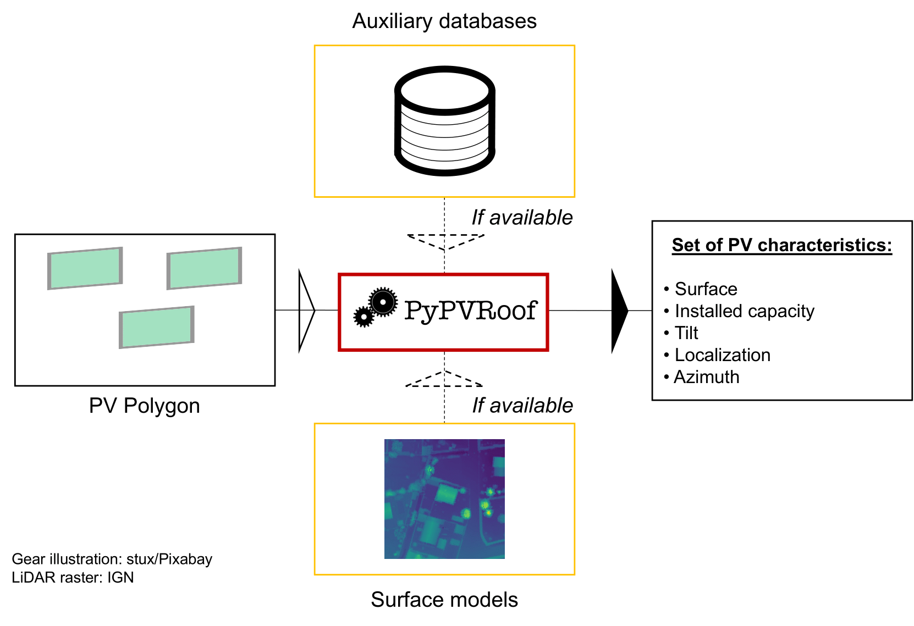

Wavelet Attribution Method (WAM)
 One Wave To Explain Them All — explore the project →
One Wave To Explain Them All — explore the project →
Feature attribution methods aim to improve the transparency of deep neural networks by identifying the input features that influence a model's decision. WAM shows that the wavelet domain — rather than the usual pixel domain — allows for informative, unified attributions that handle any input dimension, capturing both the where and what of a model's decision-making process across images, audio, and volumes. Accepted at ICML 2025.
Full abstract
Pixel-based heatmaps have become the standard for attributing features to high-dimensional inputs, such as images, audio representations, and volumes. While intuitive and convenient, these pixel-based attributions fail to capture the underlying structure of the data. Moreover, the choice of domain for computing attributions has often been overlooked. Our method, the Wavelet Attribution Method (WAM), leverages the spatial and scale-localized properties of wavelet coefficients to provide explanations that capture both the where and what of a model's decision-making process. We show that WAM quantitatively matches or outperforms existing gradient-based methods across multiple modalities, including audio, images, and volumes. Additionally, we discuss how WAM bridges attribution with broader aspects of model robustness and transparency.
PyPVRoof

Flowchart of PyPVRoof — explore the repository →PyPVRoof is a Python package to extract essential PV installation characteristics. These characteristics are tilt angle, azimuth, surface, localization, and installed capacity.
Data for replicating our accuracy benchmarks are available on our Zenodo repository,

More details
PyPVRoof is designed to cover all use cases regarding data availability and user needs and is based on a benchmark of the best existing methods. The package is designed to be used in a Jupyter notebook or in a Python script. It can be used with or without additional data (3D LiDAR data, additional registry). The package is designed to be used with Python 3.7 or higher.
Photovoltaic (PV) energy grows at an unprecedented pace, which makes it difficult to maintain up-to-date and accurate PV registries, which are critical for many applications such as PV power generation estimation. This lack of qualitative data is especially true in the case of rooftop PV installations. As a result, extensive efforts are put into the constitution of PV inventories. However, although valuable, these registries cannot be directly used for monitoring the deployment of PV or estimating the PV power generation, as these tasks usually require PV systems characteristics. PyPVRoof was built to seamlessly extract these characteristics from the global inventories.
Reference:
- Trémenbert, Y., Kasmi, G., Dubus, L., Saint-Drenan, Y. M., & Blanc, P. (2023). PyPVRoof: a Python package for extracting the characteristics of rooftop PV installations using remote sensing data. arXiv preprint arXiv:2309.07143.